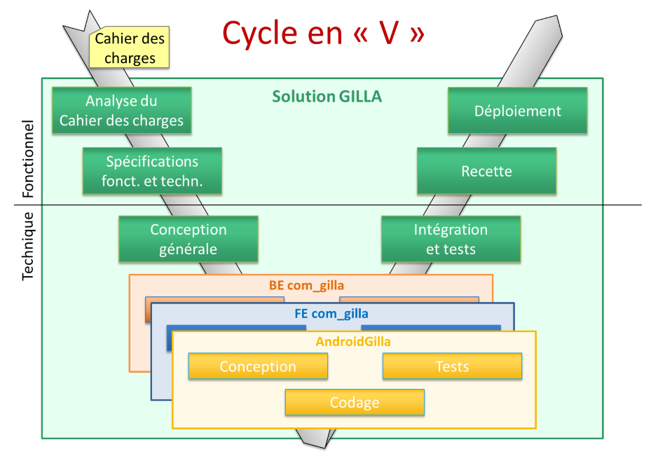

Présentation du Projet
Le projet GILLA a pour objectif de mettre en place une plateforme en ligne permettant aux élèves, étudiants, professeurs et personnels du lycée de signaler tout type de problème rencontré dans les locaux de l'établissement. Ces problèmes peuvent inclure des incidents liés à l'éclairage, à la fermeture des portes ou des fenêtres, au matériel informatique ou logiciel, et bien d'autres.
Définition des pilliers du projet
Planning générale du projet GILLA
Technologies Utilisées
Le projet GILLA est développé en utilisant une architecture MVC (Modèle-Vue-Contrôleur, Frontend comme Backend) avec Framework/CMS Joomla 4.4 et un développement PHP pour assurer une séparation claire des préoccupations et une maintenabilité accrue du code.
Voici la base de donnée sur Phpmyadmin
Interface Utilisateur
Les utilisateurs peuvent soumettre des tickets d'incidents via une interface conviviale et intuitive. Ils ont la possibilité de spécifier la nature de l'incident, sa localisation, sa date et de fournir une description détaillée du problème rencontré. Une version mobile de l'interface utilisateur est disponible, offrant une expérience optimisée sur les appareils mobiles.
Interface Administrateur
Les administrateurs ont un accès sécurisé à une interface backend dédiée pour gérer tous les aspects du site public (frontend) de GILLA. Elle offre aux administrateurs les outils nécessaires pour superviser et optimiser le processus de gestion des incidents, agents, personnels, affectation, etc, dans tout l'établissement.
Le modèle gère les données du site. Récupère les informations dans la base de données, organises et les assembles pour qu'elles puissent ensuite être traitées par le contrôleur et la vue

Fiche de test Unitaire
La version mobile de l'interface utilisateur est développée avec Android Studio en utilisant Java pour garantir une compatibilité et une performance optimales sur les appareils android. Une API de test a été spécialement développée en PHP pour pouvoir consulter la base de données GILLA à travers le framework Joomla par le protocole http.
Fiche de test Unitaire pour android

Gestion et Organisation
La gestion des versions logicielles est faite avec le logiciel libre Git. Il permet l'enregistrement des états de la base de code (commits), l'organisation en branches pour développer des fonctionnalités séparément, et le travail collaboratif et la distribution du projet.
Le développement du projet Gilla4a a été confié par notre professeur pour toute la classe en option SLAM. L'organisation a coïncidé avec notre progression pédagogique pour ce bloc. Le projet a donc été décomposé en trois livrables principaux liés à l’architecture du framework Joomla.